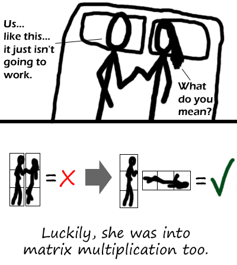

Comic JK 112
When I Feel Like It
⇤
<
?
>
⇥

⇤
<
?
>
⇥
Forum
.
RSS
.
Digg
.
Facebook
.
Reddit
.
Twitter
.
Stumbleupon
This comic and the previous one fit together very nicely as well. Comic JK almost ties with xkcd but xkcd has a higher quality. Sorry. <Sorry? Are you kidding? That's the highest praise I've ever gotten. :) > >> The ideas are sometimes on par, but the dialogue rarely is. This is still a great comic though, and I'll gladly be reading though every last one. diff person but no kidding also, Comic JK updates 5 days a week instead of 3 If you cut out 2/5ths of the weakest comics maybe it would be more comparable... this reminds me of a song from the 80's that...nevermind :) "You spin me right round, baby right round, like a matrix, baby right round" >At first glance i thought that was a reference to the meatspin song. well i think it would be /more productive/ if he got turned instead of her... i mean i dont want them to be spread out all over a 3x3 frame ;-) >note that he said "linear algebra and porn" fans. As in, suddenly there are three of each of them, perhaps? wow. on the subject, does anyone actually get the xkcd matrix comic? k. sorry. By the way, this comic is amazing. i would just like to say that. -BYI I agree about 3x3 not being cuddly enough. - ezziey Your mother can only handle scalar multiplication, but she's so fat that she's more easily represented by a square than a skinny rectangle anyway.